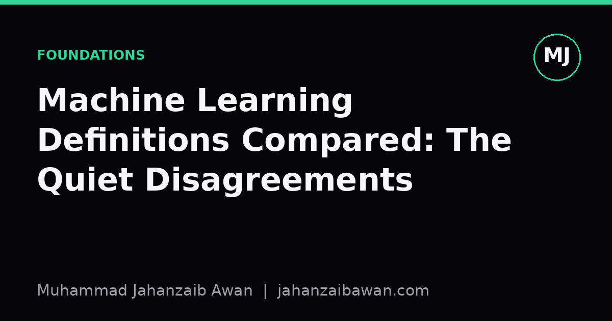

Machine Learning Definitions Compared: The Quiet Disagreements
Every textbook defines machine learning slightly differently, and those small differences in wording hide real disagreements about what counts as learning at all.

Why the definition you learned first matters
Ask most people trained in machine learning to define the field and you will get some version of a sentence that sounds authoritative but has probably been copied from one textbook into another for decades. The most quoted formulation says a program learns from experience with respect to some class of tasks and performance measure if its performance improves with experience. It is tidy, it is quotable, and it is also strangely incomplete. It says nothing about generalisation to unseen data, nothing about the difference between memorising and learning, and nothing about why we bother with held out test sets at all.
Other textbooks define the field differently, often from a statistics angle, where learning is really estimation: you are trying to approximate an unknown function or distribution from a finite sample, and the whole enterprise is about managing the gap between what you observe and what is true in general. That framing puts generalisation at the centre from the first page, rather than as an afterthought bolted on when someone mentions cross validation three chapters later.
These are not just stylistic differences. They reflect different intellectual histories: one rooted in computer science and the idea of a program that improves with experience, the other rooted in statistics and the idea of inference under uncertainty. Students who only ever see one definition tend to inherit its blind spots, and the blind spots show up later as confused intuitions about what a model is actually supposed to do.
The quiet disagreement about generalisation
Here is a concrete example of where the definitions pull apart. Suppose you train a classifier on five thousand labelled emails to detect spam, and it achieves ninety nine per cent accuracy on that same training set. Under the task and performance measure definition, taken literally, this already looks like learning: performance on the task improved as experience, the labelled emails, was provided. Nothing in that wording forces you to check performance on new, unseen emails.
Under the statistical estimation framing, ninety nine per cent training accuracy tells you almost nothing on its own. What matters is the expected performance on emails the model has never seen, and the gap between training accuracy and that expected performance is precisely the quantity the whole theory is built to control. If your model is complex enough, a decision tree with enough splits, say, or a neural network with far more parameters than training examples, it can reach that ninety nine per cent figure by effectively memorising quirks of those five thousand emails rather than learning anything that transfers.
This is why some textbooks introduce the bias-variance tradeoff and the notion of a hypothesis space in the very first chapter, while others treat it as a later refinement. If generalisation is not baked into your definition of learning from the start, it is easy to treat a held out test set as a bureaucratic formality rather than as the entire point of the exercise. I have seen students genuinely surprised that a model with excellent training accuracy can be worthless in production, and the surprise traces back to a definition that let training performance stand in for learning.
A smaller but related disagreement concerns what counts as experience. Some texts treat experience narrowly as labelled examples, which fits supervised learning neatly but struggles to accommodate reinforcement learning, where experience is a stream of interactions and rewards rather than fixed input output pairs, or unsupervised learning, where there are no labels at all. Definitions written before these subfields matured tend to need awkward footnotes to stretch across all three, and the footnotes are where you can see the original assumptions showing through.
Inductive bias: the part most definitions skip entirely
A third point of quiet disagreement is inductive bias, the set of assumptions a learning algorithm makes to generalise beyond the exact examples it has seen. Almost no textbook puts this in its headline definition, yet it is arguably the most important practical idea in the whole field. Two algorithms can see identical training data and produce wildly different predictions on new inputs, purely because of differing built in assumptions about what kind of function is plausible.
Consider a simple regression problem with twelve data points that look roughly linear but have some scatter. A linear regression model will fit a straight line and extrapolate a straight line beyond the data. A high degree polynomial fitted to the same twelve points can pass through every single training point exactly, achieving zero training error, while producing wild oscillations just outside the range of the data. Both algorithms have, by the task and performance measure definition, learned from experience. Only one of them has learned something useful, and the difference is entirely down to inductive bias: the polynomial's bias towards fitting every point exactly is a poor match for data generated with noise.
This matters in practice because inductive bias is not optional and it is not something you can avoid by choosing a sufficiently flexible model. Flexibility without the right bias just gives you more creative ways to overfit. Regularisation, architecture choices, and even the decision to use a decision tree instead of a neural network are all ways of encoding assumptions about the problem, and a definition of learning that omits this entirely leaves people thinking that more parameters or more flexibility is straightforwardly better. It usually is not, and the twelve point polynomial example is a cheap, five minute way to see why.
A working definition that earns its keep
Given these gaps, I think a more honest working definition is something like this: machine learning is the practice of using data to estimate a function or distribution, under explicit or implicit assumptions about its form, such that the result performs well on data it has not seen. This is clunkier than the quotable textbook version, but it forces three things into view at once: that generalisation is the target, not a bonus; that assumptions, inductive bias, are doing real work whether you state them or not; and that performance is measured on unseen data, which makes the train and test split a logical requirement rather than a convenience.
None of this means the classic definitions are wrong. They were written to capture something true and useful for their era, and they still work as a first sentence in a lecture. The practical takeaway is simpler: when you read or write a definition of machine learning, check whether it mentions generalisation to new data and whether it acknowledges that the algorithm's built in assumptions shape what it can learn. If a definition is silent on both, it will not mislead you about what the field is called, but it may well mislead you about what counts as success, and that is the mistake worth avoiding.